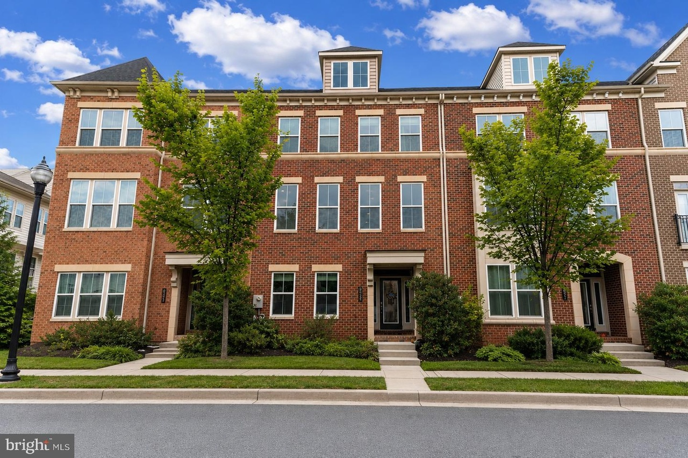
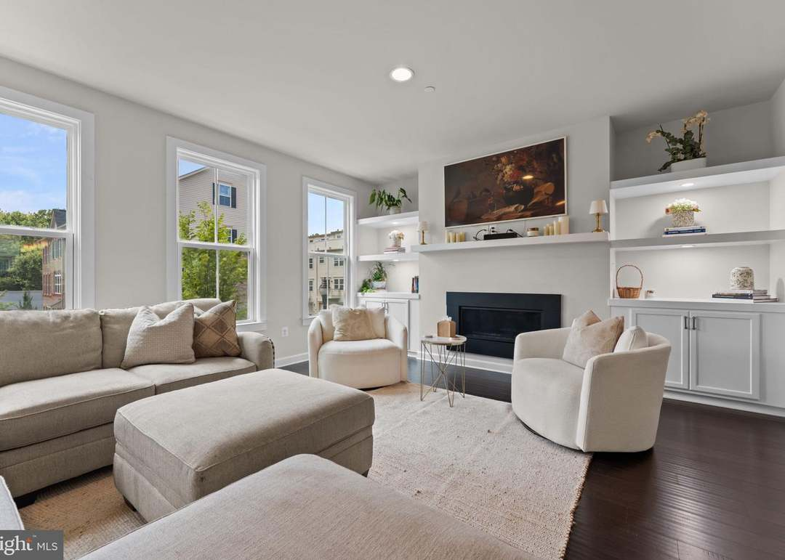
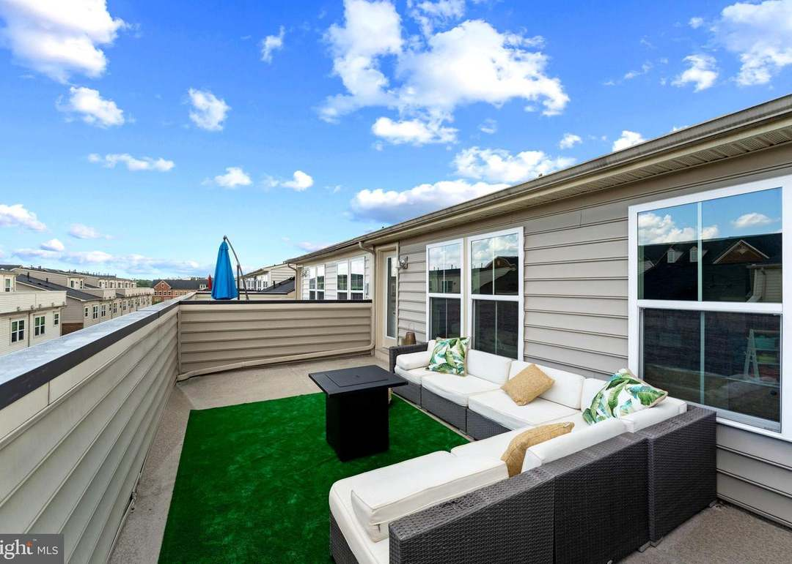

This expansive 5-bedroom, 4.5-bath residence spans four finished levels and delivers exceptional flexibility, multiple outdoor living spaces and an attached two-car garage—just minutes from the University of Maryland, College Park. The entry level includes a private bedroom and full bath, offering flexible space for guests, a home office or additional living area
On the main level, the open kitchen, dining and family room create a spacious gathering space anchored by an oversized center island, built-in cabinetry and a dedicated beverage area, with direct access to the covered deck. Upstairs, two secondary bedrooms share a full bath with double vanity, while the spacious primary suite features a walk-in closet, soaking tub and separate shower. The fourth level further distinguishes this home with an additional bedroom, full bath, versatile bonus room and rooftop terrace—creating another private living, work or entertaining space.
With five bedrooms, full baths on multiple levels, four finished levels, a covered deck, rooftop terrace and two-car garage, this home offers a level of space and flexibility that stands out in Greenbelt Station. Its proximity to UMD and College Park also creates additional possibilities for buyers considering rental or investment potential.